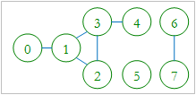
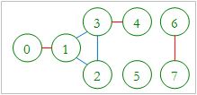

In a computer network a link L, which interconnects two servers, is considered critical if there are at least two servers A and B such that all network interconnection paths between A and B pass through L. Removing a critical link generates two disjoint sub-networks such that any two servers of a sub-network are interconnected. For example, the network shown in figure 1 has three critical links that are marked red: 0 - 1, 3 - 4 and 6 - 7 in figure 2.
|
 |
 |
|
Figure 1: Original Graph |
Figure 2: The Critical Links |
It is known that:
1. The connection links are bi-directional.
2. A server is not directly connected to itself.
3. Two servers are interconnected if they are directly connected or if they are interconnected with the same server.
4. The network can have stand-alone sub-networks.
Write a program that finds all critical links of a given computer network.
#include <bits/stdc++.h>
using namespace std;
#define pii pair<int,int>
#define vi vector<int>
#define vii vector < pii >
#define ll long long int
#define si set<int>
#define pb push_back
#define se second
#define fr first
#define mp make_pair
#define ll long long int
#define MOD 1e9+7
#define pb push_back
#define mp make_pair
#define vi vector <int>
const int MAX=1e4+5;
vi adj[MAX];
bool vis[MAX];
int disc[MAX];
int low[MAX];
int color[MAX];
int parent[MAX];
int col=0;
vector < pair < int,int > > ans;
void bridge (int u)
{
static int time=0;
vis[u] = true;
disc[u] = low[u] = ++time;
for (int i=0;i<adj[u].size();i++){
int v=adj[u][i];
if (!vis[v]){
parent[v]=u;
bridge(v);
low[u] = min(low[u],low[v]);
if (low[v] > disc[u]){
ans.pb(mp(min(u,v),max(u,v)));
//cout<<u<<" "<<v<<endl;
}
}
else if (v!=parent[u])
low[u]=min(low[u],disc[v]);
}
}
void func(int n)
{
for (int i=0;i<n;i++){
parent[i] = 0;
vis[i] = false;
}
for (int i=0;i<n;i++){
if (!vis[i])
bridge(i);
}
}
void clea()
{
col=0;
ans.clear();
for (int i=0;i<MAX;i++){
adj[i].clear();
vis[i]=false;
disc[i]=low[i]=color[i]=parent[i]=0;
}
}
int nn;
int main ()
{
//freopen("input.txt","r",stdin);
//ios_base::sync_with_stdio(false);
int t;
scanf("%d",&t);
int cas=1;
while(t--){
clea();
printf("Case %d:\n",cas++);
scanf("%d",&nn);
for (int i=0;i<nn;i++){
int u;
scanf("%d",&u);
char ss[10010];
scanf("%s",ss);
int kk=0;
for (int i=1;i<strlen(ss)-1;i++)
kk=kk*10+(ss[i]-'0');
//cout<<u<<" "<<kk<<endl;
for (int j=0;j<kk;j++){
int foo;
scanf("%d",&foo);
adj[u].pb(foo);
}
}
func(nn);
printf("%d critical links\n",ans.size());
sort(ans.begin(),ans.end());
for (int i=0;i<ans.size();i++)
printf("%d - %d\n",ans[i].fr,ans[i].se);
}
return 0;
}